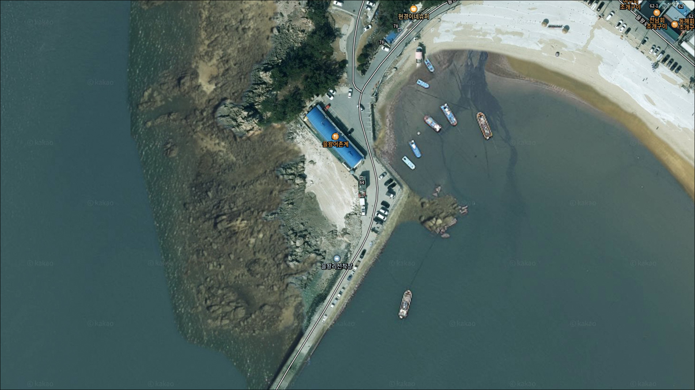
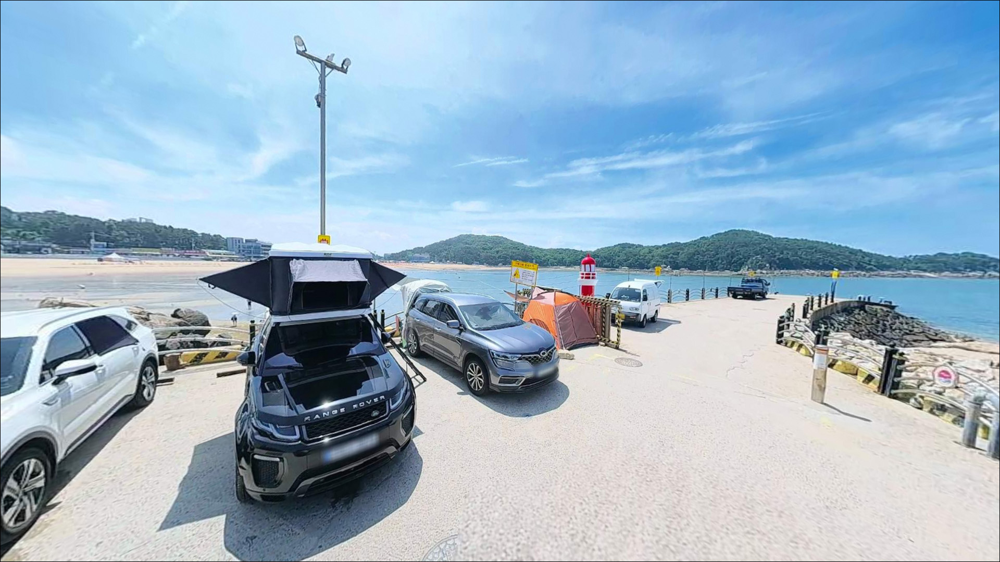
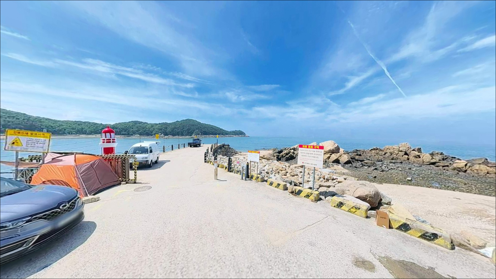
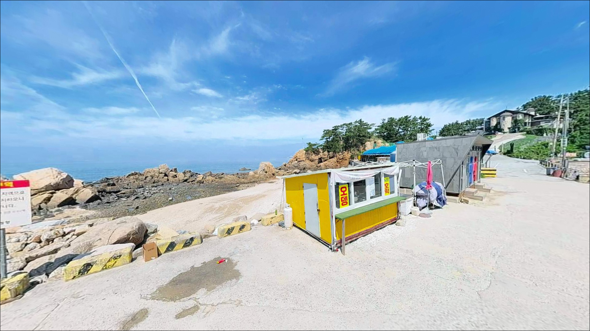
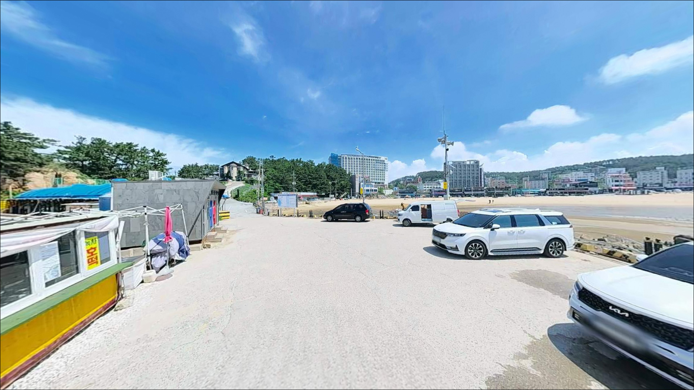
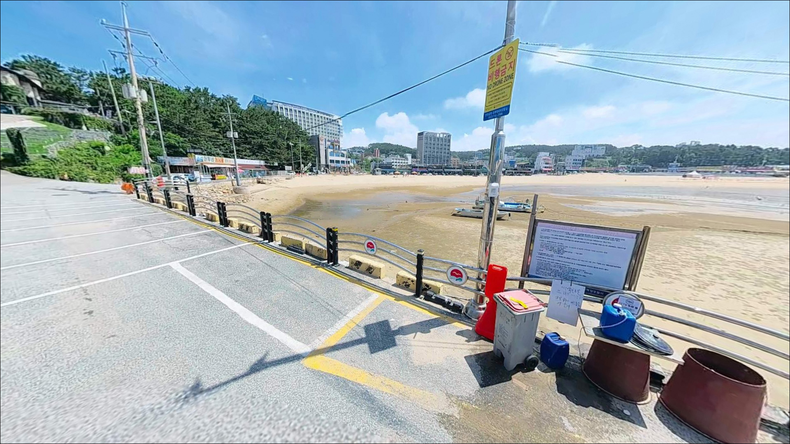
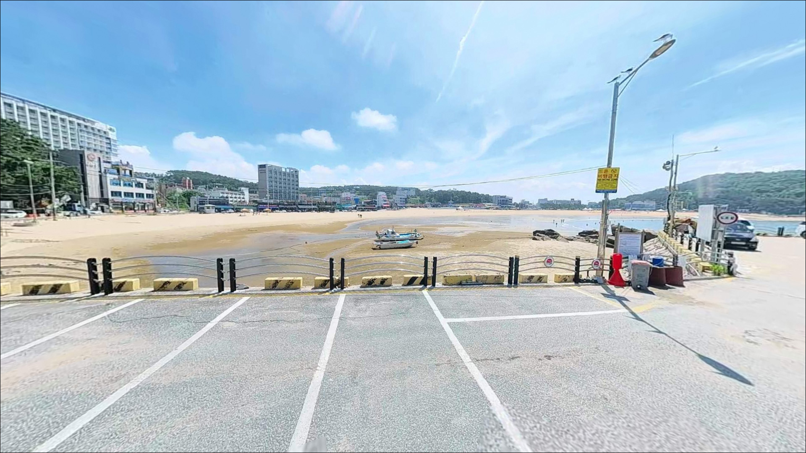
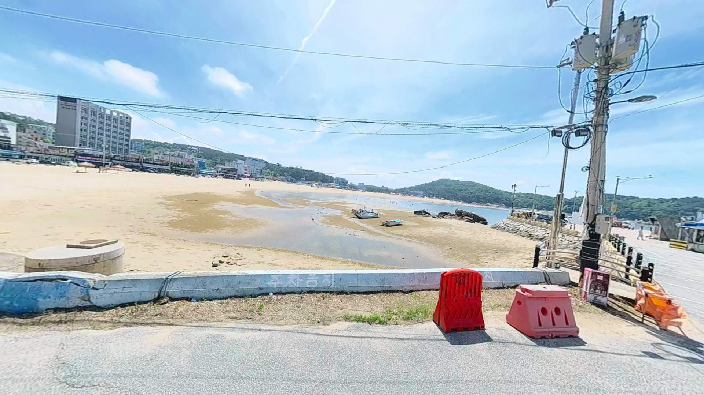
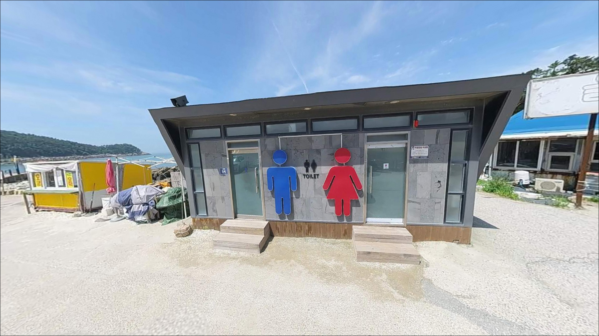

을왕리선착장, 영종도 인천 중구 고요한 수면을 바라보며 차박, 낚시를 즐기기 좋은 해안
이 페이지에는 광고(제휴 링크 포함)가 있으며, 광고 링크를 통해 구매하면 운영자가 판매 수익 또는 수수료를 받을 수 있습니다. 포인트 사진: 카카오맵 스카이뷰·로드뷰. 이 페이지의 지도·사진 이미지는 카카오맵의 실제 서비스 이미지와 다를 수 있습니다.


포인트 안내
을왕리선착장에서 가장 흔한 실수는
서해 물때를 확인하지 않고 도착하는 것입니다.
간조 시에는 수심이 크게 낮아져
선착장 발판에서 채비를 던져도
바닥에 걸리거나 낚시가 어려운 상황을
맞닥뜨릴 수 있습니다.
을왕리선착장
인천광역시 중구 을왕동 773-27
을왕리 해수욕장 바로 옆에 자리한 이 선착장은
선착장 발판 구간과 우측 갯바위 구간이
함께 붙어 있는 복합 포인트 구조입니다.
수도권에서 당일치기로 서해 바다낚시를 즐길 수 있는
서해 생활낚시 포인트로,
원투낚시와 루어를 즐기는 낚시인들 사이에서
꾸준히 이름이 오르내리는 자리입니다.
이 글은 을왕리선착장의
진입 환경, 물때 판단 기준,
낚시 스타일별 공략 조건에 집중합니다.
조황 단정이나 특정 어종 보장은
이 글의 범위에 포함되지 않습니다.

1. 진입 동선과 주차 선택 기준
을왕리선착장은 을왕로를 따라
해수욕장 방면으로 이어지는 단일 진입 루트 구조입니다.
포장된 관광지 도로를 통해 접근하며
급경사나 비포장 구간이 없어
차량 유형에 무관하게
진입 자체는 어렵지 않은 편입니다.
다만 관광지 특성상 주말과 공휴일에는
진입로가 상당히 혼잡해지는 편입니다.
주차는 두 가지를 고려할 수 있습니다.
을왕동 714 일대의 유료 공영주차장은
24시간 운영되며 전일권 기준 4,000원 수준입니다.
을왕동 717-2 인근의 임시 공영주차장은
무료이나 비포장 흙바닥이라
우천 시 노면 상태가 나빠질 수 있습니다.
주말에는 두 주차장 모두
오전 10시 이전 도착이 기준선입니다.
선착장 바로 옆 식당가 공간은
식사 조건부 구역이 포함되어 있어
낚시 목적 장시간 주차에는
적합하지 않을 수 있습니다.
공영주차장에 주차한 뒤
선착장까지 도보로 이동하는 동선이
현실적인 접근 방식입니다.

2. 차박 환경과 야간 체류 여건
을왕리선착장은 해수욕장 상권과 맞닿아 있어
야간에도 주변 식당·상가 조명이 상당히 밝은 편입니다.
완전한 노지 환경보다는
도심형 낚시 여건에 가까운 분위기입니다.
이 점은 야간 시야 확보에는 유리하지만,
조용한 체류 환경을 원하는 낚시인에게는
피로 요소가 될 수 있습니다.
차박이란 차량을 숙박 공간으로 활용하며
현장에서 하룻밤 머무는 여행 방식입니다.
을왕리선착장은 관광지 특성상
주말과 성수기에 차량 통행과 유동 인구가 많아
선착장 직근에서 장시간 취침 목적 공간을
확보하기 어려운 편입니다.
비수기 평일 이른 새벽 출조와 병행해
공영주차장 내 체류하는 방식이 현실적입니다.


3. 주변 편의시설 및 인프라 현황
편의시설 면에서 을왕리선착장은
서해권 오지 포인트들과 성격이 다릅니다.
선착장 인접 식당가에는 바지락칼국수, 조개구이, 횟집이
다수 자리하고 있어
낚시 전후 식사 해결에
불편함이 없는 편입니다.
출발 전 완전 자급 체제를 갖추지 않아도
현장에서 기본 해결이 가능한 구조입니다.
을왕로와 용유서로 방면에서
편의점과 기본 생활 인프라를
어느 정도 이용할 수 있습니다.
인천 본토에서 출발하는 경우
낚시 소품과 얼음은 영종도 진입 전에
미리 준비해 두는 편이 효율적입니다.

4. 방문 전 반드시 챙겨야 할 준비사항
을왕리선착장 방문 전 가장 먼저 확인할 것은 물때입니다.
서해 특성상 조차가 매우 크기 때문에
밀물과 썰물 사이 수심 변화가 상당히 크게 나타납니다.
바다타임(badatime.com)에서 영종도 또는 용유도 기준으로
물때를 확인하고,
중들물 이후~만조 전후 타이밍을 기준으로
도착 시각을 맞추는 것이 기본 전략입니다.
사리 전후에는 조류가 세어지는 경향이 있어
조금~중간 물때 타이밍이 초행 방문에 안정적입니다.
갯바위 구간을 탐색할 계획이라면
갯바위화 또는 등산화 착용이 필요합니다.
밀물 진행 시 갯바위 일부 구간에서
고립 위험이 발생할 수 있으므로
진입 전 수위 변화 흐름을 파악해두는 것이
기본 안전 조건입니다.
야간 낚시라면 헤드랜턴을 반드시 챙겨야 하며,
구명조끼는 선착장과 갯바위 구간 모두에서 착용합니다.
관광지 특성상 주변 민원이 자주 발생하는 구역입니다.
낚시 후 쓰레기, 폐라인, 미끼는
현장에서 전량 수거하는 것이 기본이며,
여객선 입출항 동선과 겹치지 않는 자리를
선택하는 것도 함께 챙겨야 할 매너입니다.

5. 간조에 가면 낚시가 어려워지는 지형 구조
을왕리선착장은 선착장 발판 구간과
우측 갯바위 구간으로 낚시 자리가 나뉘는
복합 포인트 구조입니다.
선착장 좌측(해수욕장 방향)은 내항 성격의
비교적 잔잔한 수면이 유지되는 편이며,
우측 갯바위 방향은 외해 쪽으로 열린 구조라
조류 흐름과 바람 영향을 직접 받는 편입니다.
서해 특성상 이 포인트의 수심은
간조 시 크게 낮아져 낚시가 어려워집니다.
중들물 이후 수심이 올라오면서
선착장 끝단을 중심으로
낚시 가능한 수심 조건이 갖춰지기 시작합니다.
선착장 끝단과 갯바위 곶부리 부근은
수심이 상대적으로 깊어지는 구간으로,
조류 변화가 집중되는 자리이기도 합니다.
선착장 발판은 비교적 넓고 평탄해
원투 채비를 날리기에 어울리는 발판 구조입니다.
갯바위 구간은 선녀바위 방향 산책로를 따라
도보로 약 15분 이동이 필요합니다.
차량을 갯바위 포인트에 인접하게 세우는 구조는 아니어서
이동 동선을 미리 파악해두는 편이 좋습니다.
최신 조황은 가기 전에 꼭 검색해 보시기 바랍니다.


6. 을왕리선착장에 어울리는 낚시 스타일
원투낚시란 무거운 봉돌을 달아
채비를 멀리 캐스팅한 뒤 바닥층을 공략하는 방식입니다.
이 포인트에서 가장 접근하기 쉬운 방식이기도 합니다.
선착장 발판이 넓어 채비 준비와 캐스팅이 편하고,
밀물 타이밍에 망둥어, 붕장어(야간), 도다리를
기대해볼 수 있는 어종 패턴이 있습니다.
특히 겨울철 망둥어 원투낚시는
이 지역 생활낚시 패턴으로 알려진 편입니다.
루어낚시는 선착장 끝단과 갯바위 구간을 나눠 활용합니다.
내항 쪽에서는 소프트베이트 채비로
우럭을 탐색하는 방식이 어울리고,
외항 방향으로는 광어와 농어를 대상으로 한
워킹 루어 시도가 가능한 구조입니다.
봄~가을 시즌에 광어와 농어를
기대해볼 수 있는 지역 패턴이 있습니다.
갯바위 구간에서는 시즌에 따라
주꾸미와 갑오징어 에깅도 시도해볼 만합니다.
갯바위 진입 시 갯바위화 착용은 기본이며,
밀물 진행 시 고립 위험 구간을
사전에 파악해두는 것이 필요합니다.
숭어 루어와 생활 찌낚시는
선착장 주변 구조물을 활용해
계절에 무관하게 시도해볼 수 있는 방식입니다.

7. 을왕리가 여의치 않을 때 영종도 대안 루트
을왕리선착장이 주말 혼잡으로 자리가 없거나
물때 타이밍이 맞지 않는 경우,
동일 해안선에서 가장 가까운 대안은
왕산 갯바위입니다.
을왕리와 인접한 해안선으로
상대적으로 유동 인구가 적은 편이며,
우럭과 농어를 기대해볼 수 있는 지형 조건입니다.
영종도 남서단의 거잠포 선착장은
을왕리에서 차량으로 15~20분 거리에 있습니다.
유동 인구가 적고 발판형 포인트 구조로,
조용한 환경에서 낚시를 원하는 경우
이쪽으로 이동하는 편이 낫습니다.
영종도 남측수문은 배수갑문 구조로
다른 포인트보다 수심이 비교적 일정한 편이라
물때 영향을 상대적으로 덜 받는 구간으로 알려져 있습니다.
선녀바위는 을왕리 갯바위 진입 동선 상에
위치해 있어 도보 탐색 중에
자연스럽게 들를 수 있는 포인트입니다.
루어와 에깅을 함께 시도해볼 만한 구조로,
을왕리선착장과 묶어서 탐색하는 동선이
영종도 서해안 낚시에서
가장 효율적인 이동 패턴에 해당합니다.

서해 물때를 알면
을왕리선착장이 다르게 보입니다
원투낚시나 루어낚시를 즐기는 낚시인으로서
수도권에서 당일치기로 서해 바다낚시를 원한다면
을왕리선착장의 접근성은 서해권 최상위 수준입니다.
선착장 발판과 갯바위 구간이 함께 붙어 있어
하루 동안 복수의 방식으로
포인트를 탐색하기 좋은 구조입니다.
반면 물때 확인 없이 방문하거나,
주말 성수기에 프라이버시 있는 차박 환경을
기대하고 간다면 기대와 다른 현실을 맞닥뜨릴 수 있습니다.
물때 확인, 주차 선택, 진입 타이밍—
이 세 가지를 사전에 갖추고 나서면
수도권 낚시인에게 가성비 좋은
서해 출조지가 될 수 있는 자리입니다.
비수기 평일 이른 새벽부터
밀물 타이밍에 맞춰 발판에 자리를 잡고,
낚시를 마친 뒤 인근 식당에서
칼국수 한 그릇으로 마무리하는 출조가
을왕리선착장과 가장 잘 맞는 여행 방식입니다.